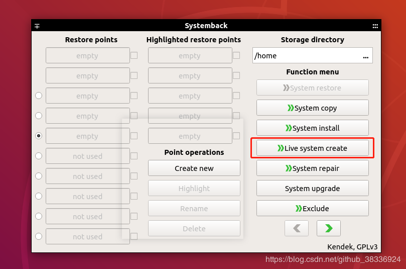
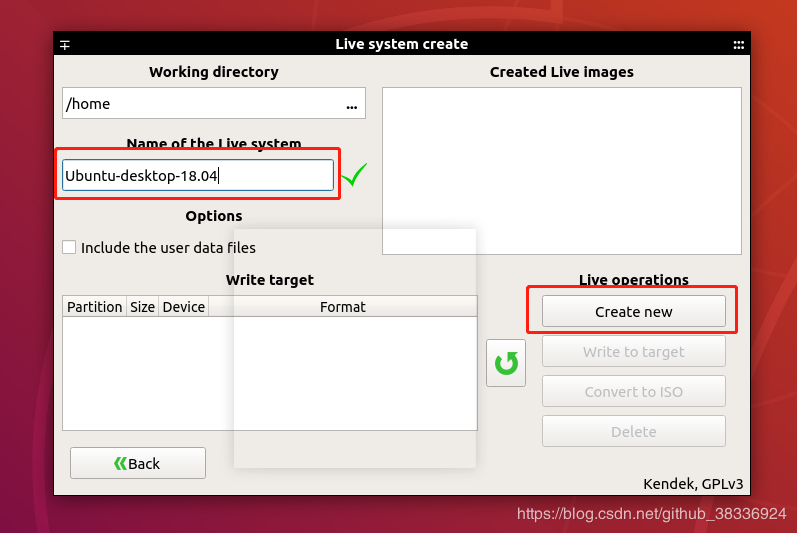
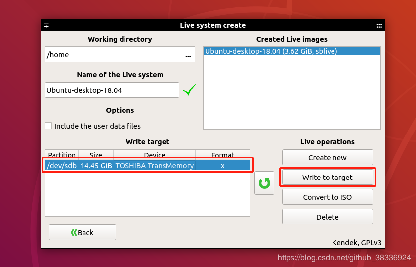
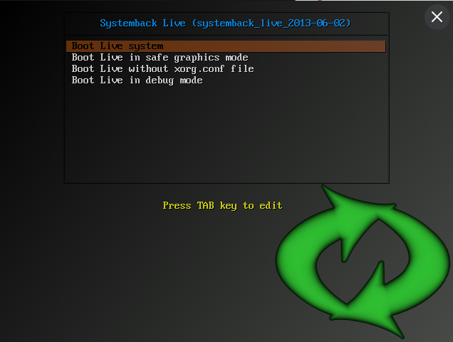
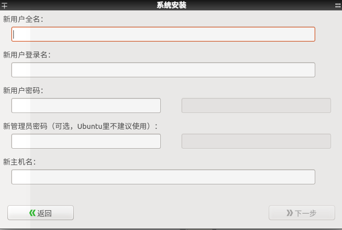
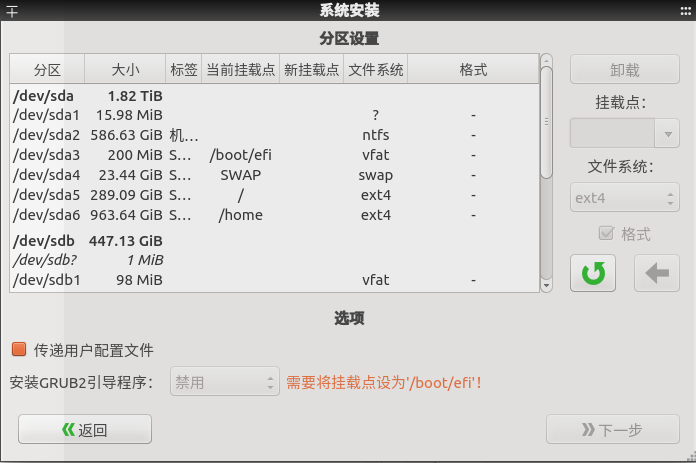

最近因工作需要，想制做Ubuntu Desktop 18.04版本的系统镜像，在网上看了下SystemBack这个工具还不错，就试了下，试了下确实好用，不过有些问题还是需要注意一下的，并且这个工具还原时需要手动设置挂载点，这个对于不熟悉Linux的童鞋来说，可能还真有点坑，所以这里记录一下使用过程吧
here wo go！！！😜
安装
这个工具没有18.04的源了，只能用16.04的，但是CSDN上很多教程都不提这一点，只是无脑的抄了别人的文章，我刚开始时就被坑了，按照CSDN上的一些垃圾教程，直接添加了18.04的ppa，结果后面安装时失败，各种问题，下面是正确的安装方式
1 | sudo add-apt-repository "deb http://ppa.launchpad.net/nemh/systemback/ubuntu xenial main" |
如果你没遇到问题，那恭喜你已经安装成功了，可以继续看下面的使用部分了，如果失败那请搜索错误原因吧，因为我按照上面的方式装过好几次都是正常的😉
如果已经看了垃圾教程，装了ppa，就要先删除
1
sudo add-apt-repository --remove ppa:nemh/systemback
备份
安装完在程序列表中就可以看到Systemback了，点击打开会看到下面的界面

如上图，点击Live system create，之后进到下面界面

左上角的Working directory(工作目录)其实就是存放镜像文件路径，设成想放的路径就好，至于下面的镜像名字自己定义就好，设置完点Crate new开始制作（我这一步遇到个坑，装系统时磁盘空间设置太小，空间不够，无法备份，最后用GParted，给系统盘增加了空间才成功，当然这是自己犯蠢，与软件无关😅）
接下来就是等待备份完成了，趁机去喝口茶或抽支烟啥的~

如上，备份成功后若你插入的有U盘可以点击Write to target将备份SBLIVE写入U盘，这样这个U盘就会变成启动盘，可以直接启动了（用下来发现好像只能将SBLIVE写入，ISO文件是无法写入的）
也可以点击Convert to ISO,将SBLIVE转成ISO，iso文件存放路径就在上面说的Working directory下，有了iso如何处理就自己尝试吧~
还原
把U盘插入要还原电脑，设置U盘启动，进去后会有下面界面

第一个是进入live system，这个是啥意思呢，其实就是进入备份时的系统状态，当时是啥样，进去后就啥样，但是这时系统并没有还原到电脑，退出就没了，进入系统后，再次打开软件，点击上面第一张图中的system install，可进入安装页面(我制做的U盘，启动后第二个菜单显示的是Boot System Installer，与上图中有所不同，选择这个能直接进入系统还原页面，比较方便)

这里设置用户名、密码等，没啥可说的，自行设置吧，设置完点击下一步，进入下面页面

如上图，这里是设置挂载点页面，具体操作方法如下：
- 选中要安装系统的硬盘，点右边的卸载/delete!，将其卸载
- /、/home、swap、/boot/efi这四个挂载点是必须要设置的，选中要挂载的硬盘，右边会出现一个文本框，让你输入分割的大小，这里根据自己的硬盘大小，酌情分配，数字设置完毕点击下面的箭头即可，建议的分割大小是
- 先分配swap，大小与内存相当即可
- 再分配boot/efi，大小200m即可
- 最后分配/和/home，文件系统都选ext4即可，/与/home的大小比一般是1:10到3:10，看个人需求而定。
- 上面四个挂载点分割完毕后，进行挂载，先选中上一步分割的硬盘，在“挂载点”下拉列表中选择要挂载的目的即可，挂载/boot/efi时你可能会发现下拉列表中没有，直接在文件框中输入这个就好了😂
注意下面的选项
- 传递用户配置文件：选中后用户家目录里面的文件都会一并还原，不选择不会还原
- 安装GRUB2引导程序，不能点禁用，上图说要将挂载点设为/boot/efi，但是我还原了两次，有一次是我加完/boot/efi后，这个自动变成了EFI，另一次却没有，没有的话选择你要将系统还原的硬盘，也是可以成功还原的
设置完成后，点击下一步再次静静等待吧~